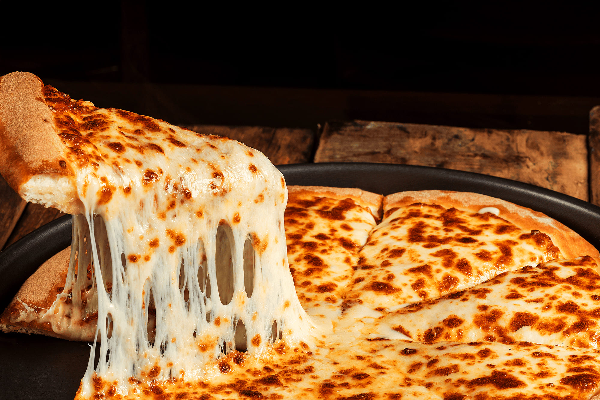

Novo sabor:
Berinjela com amêndoas
Muçarela especial, berinjela, tomate, amêndoas e
parmesão.
Peça agora

Mozarela
Muçarela especial derretida sobre
molho de tomate,
garantindo um
sabor simples e irresistível.
Marguerita
Muçarela especial combinada com
molho de tomate,
proporcionando uma
experiência clássica e equilibrada.
Quatro Queijos
Muçarela especial,
provolone, gorgonzola e
parmesão
harmonizados.